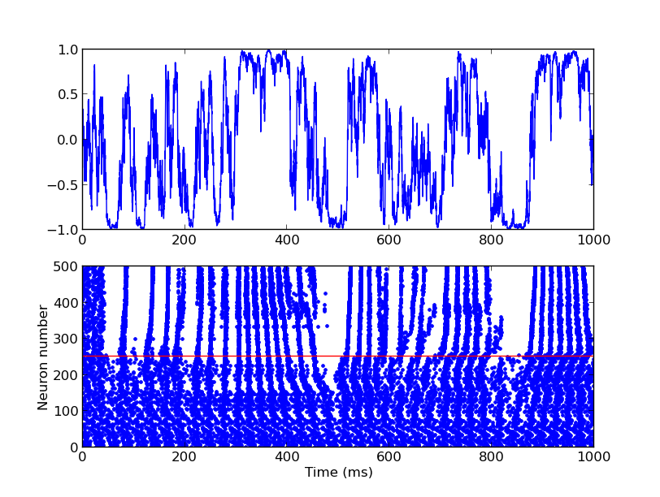

For the paper: Brette R, Guigon E (2003) Reliability of spike timing is a general property of spiking model neurons. Neural Comput 15:279-308 Abstract: The responses of neurons to time-varying injected currents are reproducible on a trial-by-trial basis in vitro, but when a constant current is injected, small variances in interspike intervals across trials add up, eventually leading to a high variance in spike timing. It is unclear whether this difference is due to the nature of the input currents or the intrinsic properties of the neurons. Neuron responses can fail to be reproducible in two ways: dynamical noise can accumulate over time and lead to a desynchronization over trials, or several stable responses can exist, depending on the initial condition. Here we show, through simulations and theoretical considerations, that for a general class of spiking neuron models, which includes, in particular, the leaky integrate-and-fire model as well as nonlinear spiking models, aperiodic currents, contrary to periodic currents, induce reproducible responses, which are stable under noise, change in initial conditions and deterministic perturbations of the input. We provide a theoretical explanation for aperiodic currents that cross the threshold. Brian simulator models are available at this web page: http://briansimulator.org/docs/examples-frompapers_Brette_Guigon_2003.html The simulation reproduces Fig. 10D,E:  This simulation requires Brian which can be downloaded and installed from the instructions available at http://www.briansimulator.org/ For support on installing and using Brian simulations there is a support group at https://groups.google.com/group/briansupport.